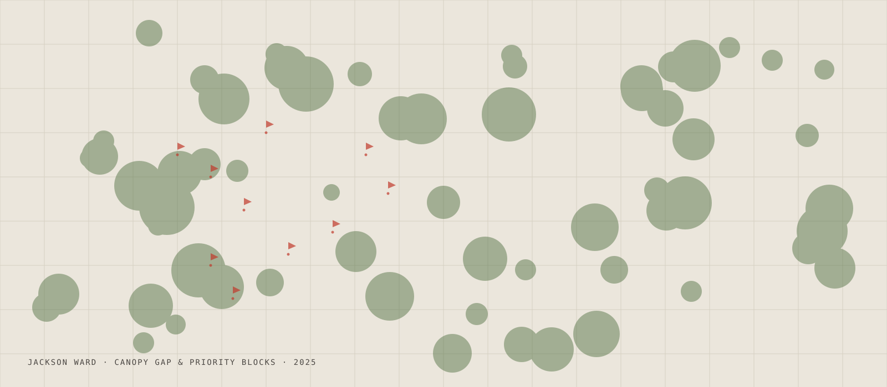
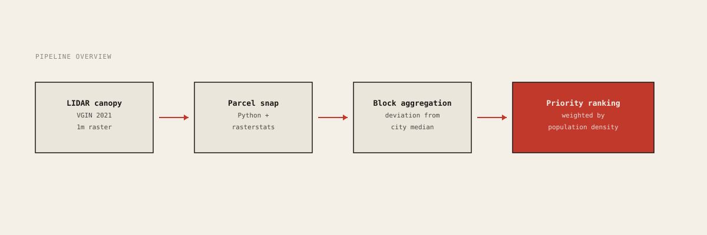

Case study · 2025
Tree Equity in Jackson Ward
A block-by-block canopy analysis built with the Historic Jackson Ward Association, now used by city arborists to prioritize plantings.

The question
Jackson Ward is one of the most historically significant Black neighborhoods in the American South, and like many redlined neighborhoods, it has roughly half the tree canopy of whiter-and-wealthier blocks just a few minutes' drive away. The Historic Jackson Ward Association had been advocating for a planting program but lacked a block-by-block picture of where the gap was largest.
I joined the project in summer 2024 to build that picture and to design something the association could actually take into city council meetings.
What I did
I started by stitching together three years of LIDAR-derived canopy data from VGIN with the city's parcel layer. The first challenge was that the canopy raster did not line up cleanly with the parcel polygons, so I built a zonal-statistics pipeline in Python that handled the snapping and computed canopy percent per parcel.
From there I aggregated to the block level, computed deviation from the citywide median, and ranked blocks by gap size weighted by population density. The HJWA team and I went through the top-30 list together and adjusted for places where a planting would not actually be feasible (an alley, a railroad cut).

What I found
The ten highest-priority blocks are all in the eastern half of the neighborhood, concentrated around 2nd Street. Three of them have less than 4% canopy, against a citywide median of 21%. The final report is now in the hands of the city's urban forestry office, and the first round of plantings happened in November 2024.
What I learned
The technical analysis turned out to be the easy part. The harder and more interesting part was learning how to present uncertainty to community members who needed to use the results to advocate. The "ranked list" worked far better than the heatmap for that audience, even though the heatmap was the more sophisticated artifact.
Deliverables
- Interactive map → Public web map hosted on GitHub Pages.
- GitHub repo → Python pipeline, data, and notebooks.
- Final report (PDF) → 12-page summary written for HJWA leadership.